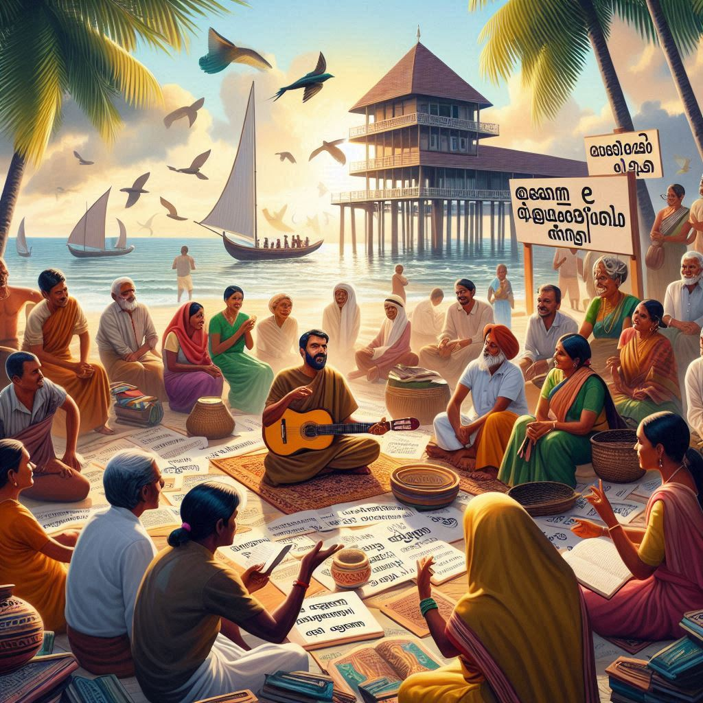
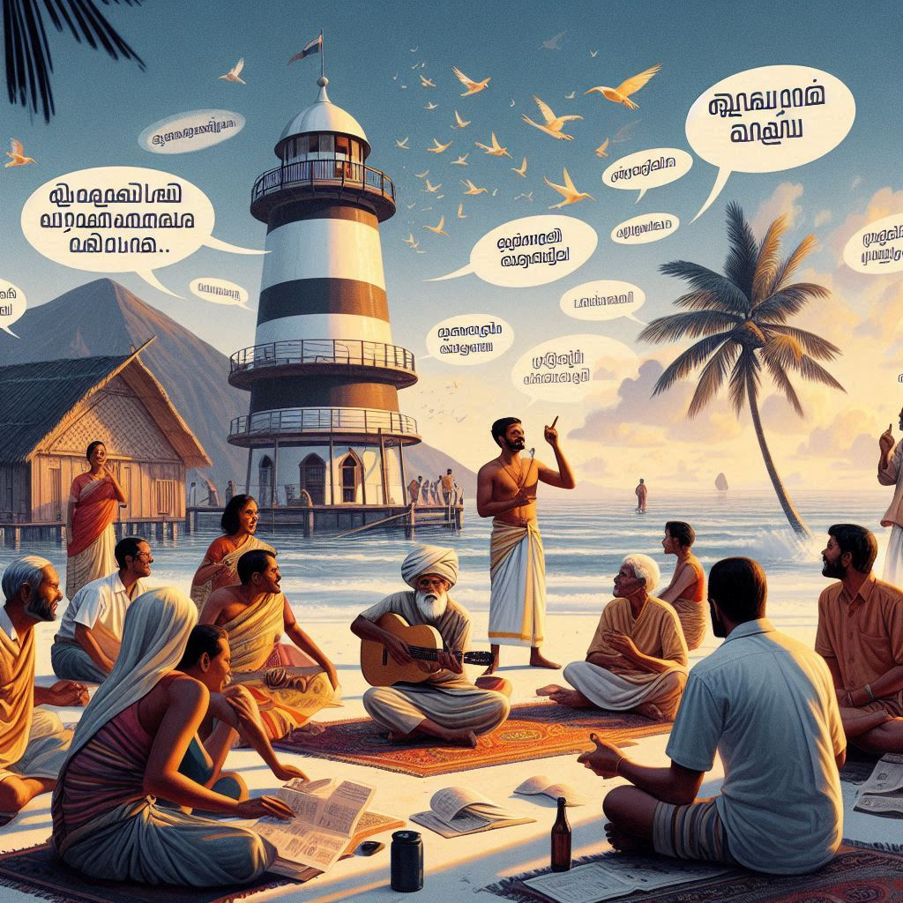

Languages of Lakshadweep:
Lakshadweep, being an isolated archipelago, has a unique linguistic landscape. The primary language spoken in the islands is Malayalam, which is the official language of the Union Territory. However, due to the islands' diverse cultural and historical influences, several other languages are also spoken by the local population.
1. Malayalam
- Malayalam is the dominant language spoken by the people of Lakshadweep, especially in the more populated islands like Kavaratti and Agatti. The language has its roots in the Dravidian family and is the official language of Kerala, the neighboring state on the mainland. The influence of Malayalam is so strong that most of the administration and education in the region is conducted in Malayalam.
- It is widely used for communication, cultural practices, and government functions. The writing script for Malayalam is also used on the islands.
2. Mahl
- Mahl is another important language in Lakshadweep, especially on the island of Minicoy, the southernmost part of the archipelago. The language belongs to the Indo-Aryan family and is closely related to the Dhivehi language spoken in the nearby Maldives.
- Mahl is a blend of Tibeto-Burman, Dravidian, and Arabic influences. The people of Minicoy traditionally speak Mahl in their daily life and cultural activities, though the younger generation is also familiar with Malayalam and English.


3. English
- English is widely used in administrative, legal, and educational contexts in Lakshadweep. It is the second language for many of the islanders, especially in more urbanized areas. English is commonly spoken among government officials, tourists, and in educational institutions.
4. Other Languages
- Due to the influence of surrounding coastal regions and historical maritime trade, Hindi and Tamil are also understood and occasionally spoken by some of the local populations, though they are not as prevalent as Malayalam or Mahl.
In summary, while Malayalam serves as the most widely spoken and administrative language of Lakshadweep, Mahl holds cultural significance, especially on the island of Minicoy. English also plays a significant role in governance, education, and communication with outsiders.